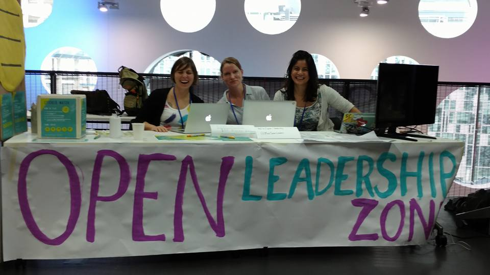
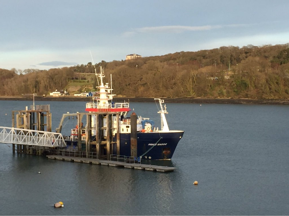
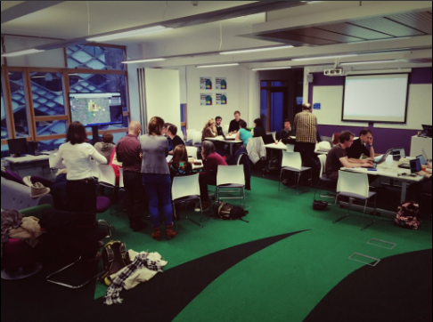
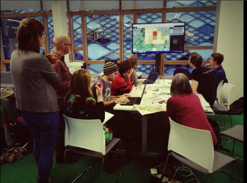

Activities
Tools
rmacroRDMR package : Tools for handling macroecological datasets in R- Sex roles in birds exploratory app : app is built around outputs of the
rmacroRDMworkflow. - fileEncoding checker app : shiny app to check csv character encoding. App allows user to toggle through fileEncodings avalaible though
Rcan be toggled through. It also makes an initial guess of file encoding on csv load.
Stuff I’m involved in
Mozilla Science Lab
Sheffield R Users group
- Meetup page
- interested in giving a talk? Let us know!
Stuff I’ve been involved in
OpenCon Berlin, Nov 2016
- Helped organise the #OpenConBerlin Reproducibility Hack. An afternoon hack where teams tried to reproduce papers nominated by their authors from supplied code and data.
- During the hack, reproduced the figures and manuscript of Daniel Falster’s nominated paper: “Leaf mass per area, not total leaf area, drives differences in above-ground biomass distribution among woody plant functional types” from public materials.
Mozilla Science Lab
1st Working Open Workshop (Berlin, Feb 2016) (Participant)
1st Open Leaders Cohort (Mentee) (\@MozOpenLeaders)
- Mentored through preparation of
rmacroRDMpackage for open collaboration during the Global Sprint June 2-3 2016 2016.
- Mentored through preparation of
2nd Working Open Training programme (Online / Mozfest, Sep-Nov 2016) (Mentor)
- Mentored Alissa Nedossekina (\@snowwitje) on her REMEDI Research Access platform for sharing technical smart medical device data, and Dennis Ndegwa (\@Dendegwa) on organising an open data hack. Programme consisted of weekly group web meetups and biweekly one-to-one skype calls with our mentees. Some awesome projects featured
- Training material
- Mentorship etherpads: Alissa | Dennis
Mozfest Nov 2016 (facilitator)
- Ran a session on Rstudio ♥ GitHub
- Helped the Science lab and the rest of the Open Leaders in creating a buzzing OpenScience space.
- Learned a lot, had fun!

Post-conference symposium at ISBE 2106: “Challenge for our generation: open, reproducible and reliable science”
10bn Achieve More Inter-diciplinary student projects
- MAQUIS Student project mentorship.
- Project developed by students and lead-mentored by Tom Webb
- Students developed the Shefiield deprivation map shiny app
Marine Ecosystems Research Programme
- assisted on a 2 week benthic sampling cruise aboard RV Prince Madog in the Celtic and Irish sea. Nice to be at sea!

Sheffield R Users group
National Biodiversity Network Hack, Mar 2016
Focused on National Biodiversity Network’s data to collaboratively develop outputs that benefit the public, Council or local wildlife organisations.
 
Better with Data Society
- Open DEFRA Marine and inland water, Jan 2016 hack
The Better with Data Society, Sheffield node of the Open Data Institute arranged a mini-hackathon, focusing on recently released Defra Open data, and in particular, on data on marine culture, biodiversity and environment with the aim of broadening opportunity for this resource to help understand life and living in waterways, coastal areas, wetlands, etc.